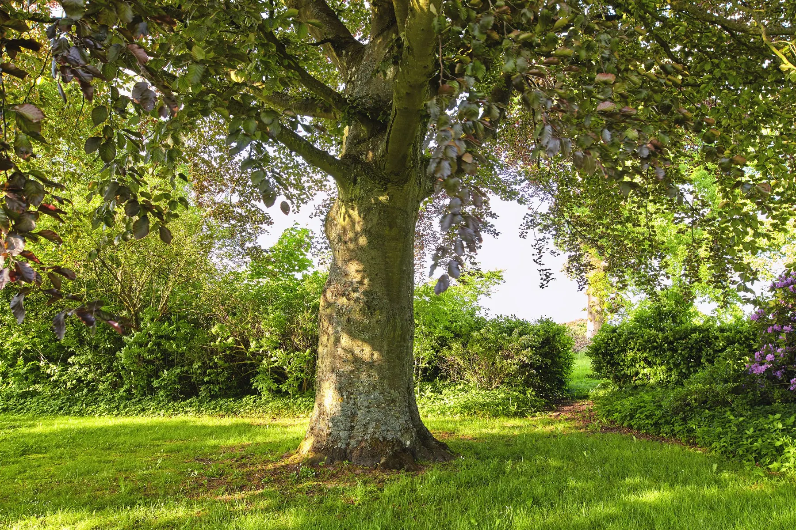

No, grass cannot grow in 100% shade. The LSU AgCenter says most turfgrasses need four to six hours of full sunlight, or longer in partially shaded areas, to grow properly. St. Augustine and zoysia are the most shade-tolerant warm-season grasses grown in New Orleans, followed by centipede, but none of them will fill in where direct sun never reaches the ground. There, a shade groundcover or a mulched bed is the better choice.
At Big Easy Lawn Care, the thin strip under the live oak is the single most common complaint we hear across Uptown and the Garden District. Homeowners replant it every year and it thins out again by August.
The grass is not failing because of the soil or the seed. It is failing because it is not receiving the light it needs to make its own food.
Once you know how many hours of sun that area actually gets, the decision becomes simple. Contact us today and we will measure the light and tell you honestly whether turf can hold there.
Count the Hours of Direct Sun in the Shaded Spot
Turfgrass cannot survive in 100% shade, so the number that decides a shaded spot is its daily hours of direct sun. The LSU AgCenter says most turfgrasses need four to six hours of full sunlight, or longer where light is filtered, and even St. Augustine thins out and fails as direct sun drops toward zero.
Guessing sun hours from memory is where most shade projects go wrong. Pick a clear day and check the spot every hour from morning to late afternoon.
Write down each hour the area is in direct sun, and note the hours when light is filtered through leaves rather than blocked. Filtered light counts for something, but not as much as open sun.
Do this in the season the canopy is full. A spot measured in February under a bare branch structure will read nothing like the same spot in July.
| Direct Sun Per Day | What Turf Will Do | Your Realistic Option |
|---|---|---|
| 6 hours or more | Holds density normally | Standard turf care, no special measures needed |
| 4 to 6 hours | Thinner but viable | Use the most shade-tolerant option, mow higher, feed lightly |
| Partly filtered light all day | Can hold with care | Thin the canopy to brighten the filter, then maintain |
| Under 4 hours, heavy shade | Thins out and fails | Change the planting to a bed or shade groundcover |
What Shade-Stressed Grass Looks Like
Shade damage has a look of its own, and confusing it with disease or insects wastes a season. Three signs tell you light is the problem.
Blades Grow Long, Thin, and Upright
Grass in low light stretches upward hunting for sun. The blades get longer and narrower while the stand gets thinner underfoot.
Color tends to stay green rather than turning yellow or brown. That stretching is the clearest sign you are looking at a light problem and not a pest.
The Stand Opens Up Instead of Dying in Patches
 Insect and fungus damage tends to appear as defined patches with edges. Shade decline is gradual and even across the whole shaded area.
Insect and fungus damage tends to appear as defined patches with edges. Shade decline is gradual and even across the whole shaded area.
You will see soil through the grass before you see anything actually die. The thinning follows the shape of the canopy overhead.
Stand back and compare the thin area to the canopy above it. If the two outlines match, light is the cause and nothing you spray will change it.
Moss and Weeds Move In First
Moss appearing in a lawn usually signals shade combined with persistent moisture. Certain weeds also tolerate low light better than turf and colonize the gaps.
Killing the moss does not fix anything if the light never changes. It returns as soon as the treatment wears off.
Treat moss as a reading rather than a problem. Where it appears tells you exactly which part of the yard is holding both shade and moisture.
Fixes That Bring Light Back to the Area
Before changing what is planted, see whether you can change the light. On many New Orleans properties this is enough.
Thin the Canopy Rather Than Topping
Selective removal of interior limbs lets dappled light reach the ground without disfiguring the tree. Topping a live oak harms the tree, and any tree on the public right-of-way needs city approval before it is cut.
Work with an arborist on any mature tree, since a bad cut on a live oak cannot be undone. Our lawn trimming service handles the ground-level growth once the light improves.
Give the area a full season after thinning before you judge the result. Grass responds to the new light gradually rather than within a few weeks.
Raise Your Mowing Height in Shade
 Grass in low light needs more leaf surface to capture what light there is. Cutting it short removes the very tissue doing the work.
Grass in low light needs more leaf surface to capture what light there is. Cutting it short removes the very tissue doing the work.
Set the mower higher over shaded areas than over open lawn. It is one of the few adjustments that helps immediately and costs nothing. Our lawn maintenance service keeps the shaded zones on their own cutting schedule.
Cut shaded areas less often too. Growth is slower there, so the same interval that suits open lawn takes proportionally more off the shaded stand.
Ease Off Water and Fertilizer
Shaded soil dries far more slowly, so the same schedule that suits open lawn keeps shade soggy. Wet shade is where fungus and moss take hold. Water deeply but less often so roots reach down instead of sitting wet.
Feed lightly as well, since pushing growth that the light cannot support produces weak, stretched blades. Less is genuinely more in these areas.
When to Stop Fighting the Shade
Some areas will not grow turf no matter what you spend. Recognizing that early saves money and looks better than a permanently thin lawn.
Choose the Most Shade-Tolerant Grass Available
St. Augustine and zoysia are the most shade tolerant of the warm-season grasses used in Louisiana, followed by centipede. Shade tolerance also varies between cultivars within a species.
Bermuda sits at the opposite end with very poor shade tolerance, so it is the wrong pick anywhere a canopy is involved. Choosing the right cultivar can buy you real margin in a borderline area, though in deep shade no cultivar solves it.
Ask your local extension agent which cultivars suit your specific yard before buying. The difference between two St. Augustine selections can decide whether a five-hour spot holds or thins.
Convert the Area to a Planting Bed
 Under 4 hours of direct sun, a mulched bed with shade plants usually outperforms any attempt at turf. It looks intentional rather than neglected.
Under 4 hours of direct sun, a mulched bed with shade plants usually outperforms any attempt at turf. It looks intentional rather than neglected.
This is the honest answer under a mature live oak canopy. The bed also protects surface roots that mowers keep damaging.
Use Hardscape Where Traffic Is the Real Issue
Where the shaded area is also the path everyone walks, no planting survives. Stepping stones, gravel, or a small patio solve both problems at once.
Our landscape restoration service rebuilds these areas so the shade stops being a recurring cost.
Get the Light Measured Before You Buy More Grass
Replanting a shaded area without changing the light is the most expensive habit we see on New Orleans properties. The same few square yards get sodded each spring, and by late summer the stand has thinned right back.
At Big Easy Lawn Care, we measure the actual sun hours, tell you whether turf can hold, and build the right solution when it cannot. Call us today to have your shaded areas assessed before the next replanting.
Frequently Asked Questions
How much sun does grass need per day?
Most turfgrasses need four to six hours of full sunlight, or longer where the light is partially filtered, to grow properly. Below that range the stand thins out no matter how carefully it is fed and watered. Measure the actual hours in your own yard before deciding what to plant.
What grass needs the least amount of sun?
Among the warm-season grasses grown in Louisiana, St. Augustine and zoysia need the least sun, followed by centipede, while bermuda has poor shade tolerance. Even St. Augustine needs several hours of direct light, since the LSU AgCenter puts most turfgrasses at four to six hours of full sun. Shade tolerance also varies between cultivars.
Why won’t grass grow under my oak tree?
Mature oaks block most direct sun and their surface roots compete for water and nutrients. The combination leaves turf without enough light to sustain itself. Thinning interior limbs helps in moderate cases, but under dense canopy a planting bed is the practical answer.
Can you grow St. Augustine grass in full shade?
Not reliably. St. Augustine can tolerate moderate shade and ranks with zoysia as the most shade tolerant warm-season grass, but full shade still falls below what it needs to hold density. Expect thinning and stretching rather than a healthy stand, and plan for a groundcover or bed instead.
Should I mow shaded grass higher?
Yes, raising the cutting height leaves more leaf surface to capture the limited light available, which directly supports the plant. Cutting shaded areas as short as open lawn removes the tissue doing the work and speeds the decline. Mow those areas less often as well.
Does moss in the lawn mean too much shade?
Moss usually signals a combination of shade and persistent moisture. It moves into gaps that thinning turf leaves behind rather than killing the grass itself. Treating the moss without improving light or drainage only clears it temporarily, and where it appears marks the parts of the yard holding both shade and moisture.
How do I improve grass under trees?
Thin interior limbs to raise light levels, mow higher in the shaded zone, water less often than the open lawn, and feed lightly. Choose the most shade-tolerant cultivar available. If direct sun still falls under 4 hours, convert the area rather than replanting.
What is the best grass alternative for shady areas?
Shade-tolerant groundcovers are the usual answer. The LSU AgCenter names liriope, Asiatic jasmine, and holly fern as groundcovers for shaded Louisiana sites, and a mulch of wood chips or pine straw works where nothing will grow. Neither needs regular mowing, and both protect the surface roots that mowers keep damaging under a tree.